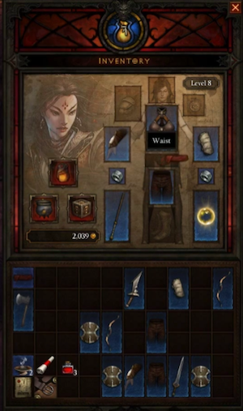

Combat
Combat is the main activity engaged in while playing games in the Diablo series; they're not known as click-fests for nothing. Diablo isn't an RPG with a lot of social activities, or professions, or NPC dialogue. It's about killing vast hordes of evil monsters.
Every class in Diablo III is a DPS class; all are capable of prolifically slaying the enemies, whether by spells, skills, brute force, or a clever combination of all three.
Damage Types
As in previous games in the series, there are numerous types of damage in Diablo III. Various spells, skills, skillrunes, and weapons channel their destructive might into one (or more) types of damage. Characters and monsters counter these attacks with equivalent types of resistance and immunities, and players must find the right balance of each if they wish to succeed in their battles.
Damage in Diablo III takes the following forms. Every form of damage can count for a critical hit (caused by various item or skill properties) and when a "crit" is landed, a bonus effect is added along with increased damage.
Physical Damage:
- Critical hit: Deals double damage.
Arcane Damage: Purple in coloration.
- Critical hit: Arcane crits "silence" targets. (Silenced targets can not cast some spells, such as a Skeletal Summoner or Goatman Shaman resurrecting fallen minions.)
Cold Damage: Blue in coloration.
- Critical hit: Cold crits freeze targets for 2 seconds.
Fire Damage: Red in coloration.
- Critical hit: Fire crits set targets ablaze, adding DoT to the initial fire damage.
Lightning Damage: White in coloration.
- Critical hit: Lightning crits stun targets for 2 seconds.
Disease Damage: Green in coloration. (Formerly known as "Toxic.")
- Critical hit: Disease crits deal an unknown bonus.
- Resisted by Poison resistance.
- Diseased units suffer a damage debuff; they take more damage and heal less.
Poison Damage: Green in coloration. (Also known as Acid.)
- Critical hit: Poison crits deal an unknown bonus.
- Resisted by Poison resistance.
- Poisoned units suffer a health debuff; their regeneration and healing is lessened or reversed.
Holy Damage: White in coloration. (Found mostly on Monk skills.) Extra damage to Undead?
- Critical hit: Unknown.
Spell
The actual formula for spell damage is one of the biggest changes to combat in Diablo III. It's been changed to work much like physical damage does; spells now come with a fairly low base damage, much like weapons, and that value is acted upon by attributes, spells, traits, and equipment bonuses, all of which factor in to the final spell damage. Equipment with +%spell damage is quite common, and mage characters will want to collect as much equipment of that type as possible, in order to improve their killing power.
One of the biggest effects of this change is that spell casters will no longer be able to wearing all +magic find gear. A Wizard or Witch Doctor can wear that sort of gear if they want, but if they forgo +%spell damage equipment their killing power will be very poor; much like a physical damage character trying to play in Hell with a base damage weapon.
Spell Damage
There are two major changes to how spell damage is calculated in Diablo III. In addition to the spell itself increasing in damage with more points in it, and various passive skills boosting all or some group of spells, the Wizard's stats are factored in when determining damage, and +%spell damage, found on many items, is essential to maintaining a rapid killing speed.
Attributes
Just as strength and dexterity are a crucial part of the damage calculations for the accuracy and damage of most physical skill attacks, the attributes will matter for spell accuracy and damage in Diablo III.
Which stats, and how they'll be calculated, is not yet known.
+% Spell Damage
The biggest change to spell casters in Diablo III is the addition of +% spell damage modifiers. These sorts of modifiers were found on some passive skills in Diablo 2, as well as on a very few uniques and runewords, but they were uncommon, and were not required to kill effectively. As a result, casters in Diablo 2 were much less item-dependent than the combat classes, and found it easier to concentrate on Magic Find, resistances, hit points, and other non-damage bonuses.
This will not be the case in Diablo 3, where mages must add considerable +% spell damage from modifiers to stay ahead of the monster hit point curve. A high level Wizard or Witch Doctor in Diablo 3 will no more be able to kill quickly with no +spell damage than a Barbarian or Monk could succeed with a junk weapon.
Scrolls
One type of "spell" that can't be considered a skill is something cast by a scroll. There are only a few of these in Diablo III, and all characters can use them.
The Scroll of Identify returns in Diablo III. As in previous games in the series, all magical, rare, legendary, set items are found "unidentified" and must be IDed to see their stats. UnIDed items can not be equipped in Diablo III.
The Scroll of Wealth is a new scroll in Diablo III. These items allow a character to sell items without returning to town.
The Scroll of Town Portal is not in Diablo III. It was, during much of the game's development, but was removed after the team decided that allowing an easy escape to town was defeating their efforts to make combat more meaningful and intense.
Critical Hit Visuals
Critical hits inflict extra damage and/or bonus effects (detailed above). Various skills and items can improve the odds of a critical hit, as well as the damage it deals. Other skills or item effects trigger each time a critical hit is scored, creating an interesting and interconnected system of damage bonuses.
Critical hits existed in Diablo II, but they were indicated only by a small sparkle of white light. That concept has been vastly upgraded in Diablo III. Now, when a monster takes a "crit" there's a dramatic graphical effect, especially if the death is due to crits. Monsters so slain literally explode, shattering into gory chunks that fly across the screen and litter the ground. These animations are customized for whatever type of damage killed them; flames will be seen on the hunks of meat if the critical was fire-based, sparks rise from lightning, etc. Physical damage crits leave huge slicks of blood and give a battlefield a lovely post-massacre patina.
More Immersive/Difficult Combat
Diablo III does not include Town Portals, life leech is very rare, and Healing Potions carry a substantial cool down after each use. These changes (amongst others) were made to improve the combat and immersive feeling of the game. The developers felt that potions, life leech, and town portals were exploited in Diablo II, and were a chief reason for the game being very easy 99.9% of the time, and unfairly hard (due to one-hit kills) the other .1%.
The design goal of Diablo III is to make combat more immersive and challenging. Characters cannot heal so easily and cannot flee combat at any time (via town portals), thus the monsters are more difficult and dangerous, even without the potential for cheesy/buggy one-hit kills. The developers hope this will create a more tense, exciting atmosphere and make combat feel more real and intense.
Interface
The User Interface, often abbreviated to UI, term for the game controls, buttons, icons, window layout, input types and everything else that players manipulate to control their character or view to see the relevant stats of characters, items, monsters and everything else in the game.
The "belt" interface in Diablo III is an evolutionary improvement on the versions seen in Diablo I and Diablo II. The form and function will be familiar to players experienced in the other games, but there are a few major changes in Diablo III that make the controls easier to use, but also guide players to operate the game as the D3 Team intends.
It's no longer actually the "belt," since belts in Diablo III are just another piece of armor; they do not have any special role as potion-holding devices.
Function

The way the controls work has been modified somewhat in Diablo 3.
The usual control method is to put active skills, ones your character will be using constantly, on the mouse buttons.
- The left mouse button (LMB) skill remains there all the time, unless/until you drag another skill down to replace it.
- The right mouse button (RMB) has two skills; you switch between them by clicking the Tab button, or by rolling the mouse wheel. These are usually the secondary skills, but ones you wish to use almost constantly.
- The 1234 buttons cast whichever skills are mapped to those buttons, targeting the spell for where the cursor is pointing, just like a mouse click. These are generally summoning or buff skills, but can also be direct attack skills.
- You may also map potions, elixirs, or scrolls to the 1234 buttons.
- The 5 slot holds healing potions. If you use up all of one quality level, any other healing pots in your inventory will automatically fill the 5-slot.
Casting a spell or skill from the 1234 buttons works just like casting it from the mouse button. You could, in theory, play entirely with the 1234 keys, only using the mouse to target. Generally, players put support skills on the 1234 buttons. Summoning spells, buffs, debuffs, and so forth. Direct attack skills can be mapped there as well; it just takes some practice to get used to casting these with keyboard buttons, instead of (in addition to) the mouse buttons.
Above the skill bar:
Inventory
A character's Inventory is the menu page that shows the Paper Doll with currently-equipped Items, and the inventory where spare items are stored. The inventory system has changed a great deal from how it functioned in Diablo II, and Diablo III's inventory has changed many times during the game's development.
